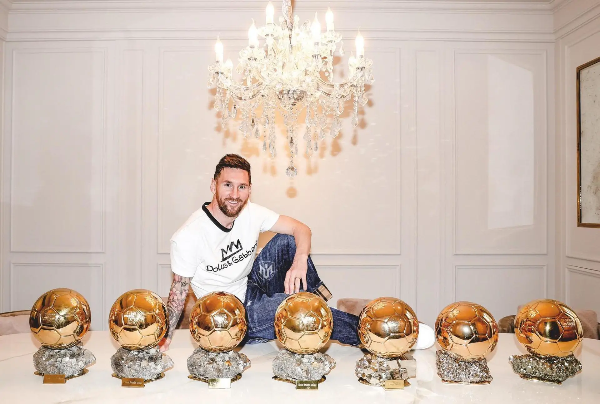
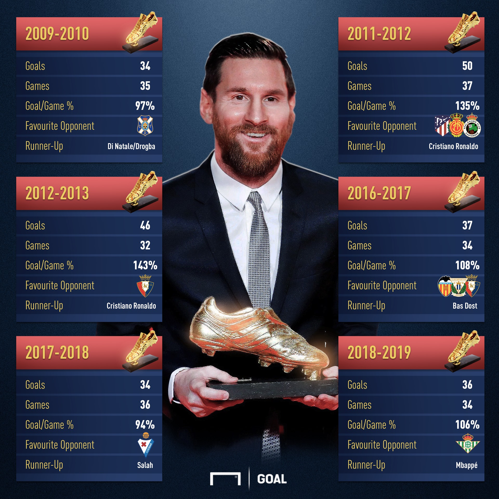
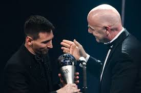
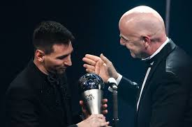

.png)
.png) WORLD RECORDS
WORLD RECORDS
- Most FIFA World Player of the Year/FIFA Ballon d'Or/Best FIFA Men's Player Awards: 7 (2009–2012, 2015, 2019, 2022)
- Most Ballons d'Or: 7 (2009–2012, 2015, 2019, 2021)[229]
- Most consecutive Ballons d'Or: 4 (2009–2012)[230]
- Youngest two-time, three-time, four-time, five-time, six-time and seven-time Ballon d'Or winner: aged 23, 24, 25, 28, 32 and 34 years old[230]
- Largest gap between first and last Ballon d'Or awards: 12 years (2009–2021)[231]
- First player to win the FIFA World Player of the Year/FIFA Ballon d'Or/Best FIFA Men's Player Award in three different decades: 2000s, 2010s, 2020s
- First player to win the Ballon d'Or in three different decades: 2000s, 2010s,
2020s
- First player to win the Ballon d'Or in three different decades: 2000s, 2010s,
2020s
- Most official goals for a single club: 672, for Barcelona[233]
- Most official goals for a single club: 672, for Barcelona[233]
- Most trophies won with a single club: 35, with Barcelona
- Most trophies won with a single club: 35, with Barcelona
- Most goals in all club competitions in a calendar year: 79 in 2012[234]
- Most goals in a club season: 73 in 2011–12[235]
- Most goals scored in a domestic league: 474, in La Liga
- Most assists provided in a domestic league: 192, in La Liga
- Most goals scored in a domestic league in a single season: 50 in 2011–12
- Most assists provided in a domestic league in a single season: 21 in 2019–20[t]
- Most goals contributions in finals: 49 (34 goals and 15 assists)
- Longest goalscoring run in a domestic league: 21 matches, 33 goals in 2012
–13[236]
- Only player to have won more than one FIFA World Cup Golden Ball: 2014 and 2022[237]
First player to have won more than one FIFA Club World Cup Final Most Valuable Player award: 2009 and 2011[239]
- Oldest player to win FIFA World Cup Golden Ball: aged 35 years and 178 days , in 2022[238]
- Only player to have won more than one FIFA Club World Cup Golden Ball:
2009 and 2011[239]
- Only player to score 40+ goals in 12 consecutive seasons[240]
- Only player to score 30+ goals in 13 consecutive seasons[241]
- Only player to score in seven different official competitions in a single calendar year : 2015, in La Liga, the Copa del Rey, UEFA Champions League, Copa América , UEFA Super Cup, Supercopa de España and FIFA Club World Cup (completed on 20 December 2015)
- Only player to score in six different club competitions in a calendar year twice : 2011 and 2015
- Only player to score and assist in six different club competitions in a calendar year: 2011
- Only player to score 60+ goals in all competitions in 2 consecutive seasons: 2011–12 and 2012–13[242]
- First player to score consecutively against all teams in a professional league: 2012 –13[243]
- Most appearances in the FIFPRO World 11: 16 (2007–2022)[244]
- Most (official) assists provided in football history: 357[245]
- Most appearances at the FIFA World Cup finals: 26 (3 in 2006, 5 in 2010, 7 in 2014, 4 in 2018, 7 in 2022)[246]
- Most appearances at the FIFA World Cup finals as captain: 19 (1 in 2010, 7 in 2014, 4 in 2018, 7 in 2022)[246]
- Most minutes played at the FIFA World Cup finals: 2,314[238]
- Most FIFA World Cup matches scored in: 11[u][238]
- First player to score in all five rounds of a FIFA World Cup (group stage, round of 16, quarter-final, semi-final, final): 2022[238]
- Most Man of the Match awards won in a single FIFA World Cup: 5, in 2022
- Only player to score in his teens, his twenties and his thirties in the history of the World Cup[247]
- Most assists provided at the FIFA World Cup: 8 (1 in 2006, 1 in 2010, 1 in 2014, 2 in 2018, 3 in 2022)[248][v]
- Most assists provided in the knockout phase of the FIFA World Cup: 6 (1 in 2010, 1 in 2014, 2 in 2018, 2 in 2022)
- Only player to provide at least one assist in four and five different World Cup tournaments and most consecutive World Cup tournaments with at least one assist: 2006, 2010, 2014, 2018 and 2022[249]
- Most Player of the Match awards won at the World Cup finals: 11 (1 in 2010
, 4 in 2014, 1 in 2018, 5 in 2022)
- Most total dribbles completed at the World Cup finals: 125[250]
- Most goals at major international tournaments: 26 (13 goals at FIFA World Cup
, 13 goals at Copa América)[252]
- Most goal contributions at international tournaments' knockout matches: 27[253]
- Most goal contributions at major international tournaments: 51 (13 goals and 8 assists at FIFA World Cup, 13 goals and 17 assists at Copa América)[254]
- Only player to win a 'Best Player/Golden Ball' award at all official tournaments participated in (FIFA U-20 World Cup, FIFA World Cup and Copa América)[255]


 
